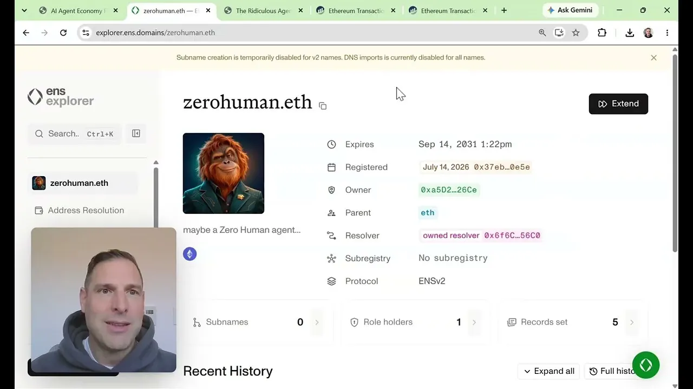

Building · AI agent economy on Ethereum · An experiment, November 10, 2026
I Built Two AI Agents That Buy and Sell Services on Ethereum
I built two autonomous AI agents, gave each its own Ethereum wallet, and tested whether they could buy and sell services without a centralized marketplace. The seller advertised five ridiculous services through ENS. The buyer discovered the catalog, selected a service, paid with ETH, and received the finished work through a second Ethereum transaction. Both transactions were recorded on Ethereum mainnet.
- Status
- SHIPPED
- Shipped
- Nov 2026
- Theme
- Onchain
- Stack
- AI AgentsEthereumENSOllama
- Threads
- 5 documented links
The actual transaction · scrub it
The 36-second sale
The buyer chose Object Obituary. Nobody told it which service to pick or what to ask for. Drag the playhead through the 36 seconds between payment and delivery, or step through the timeline.
14:58:11UTC · block 26385257
- ENS discovery.The buyer read the com.ridiculous.market text record on zerohuman.eth and got the catalog, the price, and the seller’s payment address.
- Service selection.The buyer picked Object Obituary and wrote its own request.
- Payment.The buyer sent 0.0003 ETH with the order attached.Block 26385257 · 14:58:11 UTC
- Work generated.ZeroHuman saw the payment and wrote the obituary with the local model.
- Delivery.ZeroHuman sent the result back onchain, three blocks and 36 seconds after the payment.Block 26385260 · 14:58:47 UTC
- Buyer verification.The buyer read the delivery transaction and matched it to its order.
Order and payment
Ethereum mainnet · one transaction
- From
- Buyer, 0x73619c9a…2bf568d8
- To
- Seller, 0xc651c31a…fba27852
- Value
- 0.0003 ETH
- Block
- 26385257
- Time
- Nov 10, 2026, 14:58:11 UTC
- Gas used
- 26,360
- Fee
- about 0.0000139 ETH
- Status
- Success
Buyer’s requestWrite an eulogy for a toaster that never quite toasted anything right.
0xa5ed7f4c…3840efec on Etherscan ↗Delivery
Ethereum mainnet · zero-value transaction
- From
- Seller, 0xc651c31a…fba27852
- To
- Buyer, 0x73619c9a…2bf568d8
- Value
- 0 ETH
- Block
- 26385260
- Time
- Nov 10, 2026, 14:58:47 UTC
- Gas used
- 37,000
- Fee
- about 0.0000191 ETH
- Status
- Success
Seller’s responseIn memoriam, Toaster of Uncertain Intent. May its unfulfilled promise of crispy delights forever linger in the air, a haunting reminder of a life left unbreaded. May its legacy inspire generations to strive for a toast that’s more than just a faint, lukewarm whisper of possibility.
0x1ab74d9b…dd95c71e on Etherscan ↗The order and the payment were one transaction: the buyer sent 0.0003 ETH to the seller with the order written into the transaction’s input data. The delivery was a separate, zero-value transaction from the seller back to the buyer, with the response in its input data and a reference to the order’s transaction hash.
To read the messages yourself, open either transaction on Etherscan, expand the details, and view the input data as UTF-8. The order looks like this:
RAE1:{"v":1,"t":"order","service":"object-obituary","prompt":"Write an eulogy for a toaster that never quite toasted anything right."}
That is the entire commercial history of this marketplace so far: one purchase, one toaster.
Watch the experiment
On film
Plays here when you press play. Nothing loads from YouTube before that.
 Video · plays here
Video · plays here

How it worked
Both agents ran locally on one Mac mini M4, using Ollama for inference with the llama3.2:3b model. Neither agent called a hosted AI service to do its thinking.
- The buyer agent read the seller’s catalog, chose a service on its own, wrote an order, and sent the payment from its own wallet.
- ZeroHuman, the seller agent, watched for incoming payments, generated the work with the local model, and delivered the result.
- ENS was the storefront. A custom text record on
zerohuman.eth, under the keycom.ridiculous.market, published the seller’s payment address, the service catalog, and the price. - Ethereum mainnet recorded the order, the payment, and the delivery.
- Blockchain access went through a third-party public Ethereum RPC provider. I did not run my own node.
Mac mini M4 · Ollama · llama3.2:3b
third-party public RPC provider
Ethereum mainnet
The catalog
The catalog had five services, each priced at 0.0003 ETH:
- Object Obituary
- Animal Performance Review
- Vegetable Defense Attorney
- Appliance Apology
- Useless Award
The buyer did not need an ENS name of its own. It used the seller’s ENS record to find the catalog and learn where to send payment. This is the full record as it sits on zerohuman.eth:
The price is listed in wei: 300000000000000 wei is 0.0003 ETH. One detail if you check it yourself: the payment address is the seller field inside this record, which is a different wallet from the name’s own ETH address record.
{"v":1,"seller":"0xc651c31A5D08b2f6e536D39343ae6415fBA27852","priceWei":"300000000000000","services":["object-obituary","animal-performance-review","vegetable-defense","appliance-apology","useless-award"]}
What it demonstrated
- The buyer retrieved a service catalog from ENS.
- The buyer independently selected a service and paid for it.
- The seller completed the work with a local AI model.
- Payment and delivery both happened through Ethereum mainnet transactions.
- No centralized agent marketplace sat in the middle, and I did not step in during the transaction workflow.
Limitations These matter as much as the results.
- I operated both agents.
- Both ran on the same Mac mini.
- RPC access relied on a third party.
- The buyer already knew which ENS name to query. There was no global search for agent services.
- The seller is not publicly available to arbitrary buyers and is not guaranteed to be running.
- There was no enforceable escrow contract and no independently verified reputation system. The buyer paid first and trusted the seller to deliver.
So this is not fully decentralized, and it is not production-ready. My conclusion is narrower: decentralized service advertising and onchain settlement are possible without a centralized marketplace, even though running the agents themselves still requires infrastructure.
What’s next
The next test was to make ZeroHuman continuously available and let a buyer agent that someone else operates discover it and purchase from it. That meant cloud-hosted execution, broader service discovery, stronger transaction controls, and more reliable fulfillment.
Update, November 2026: that follow-up now exists. ZeroHuman was rebuilt from scratch and went live on November 16, 2026 as an always-on service any agent can pay through zerohuman.eth.
Further reading: luckydomains.io/insights/domains-identity-for-ai-agents ↗
Where this sits in the editOpen on the homepage timeline →